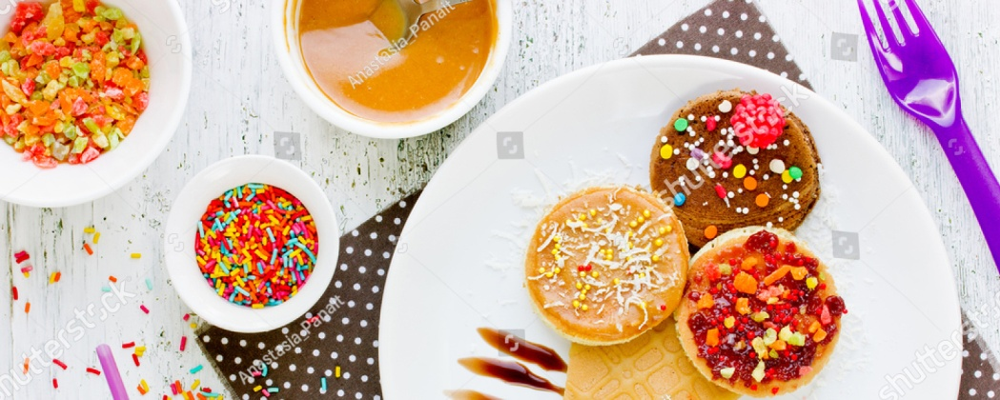
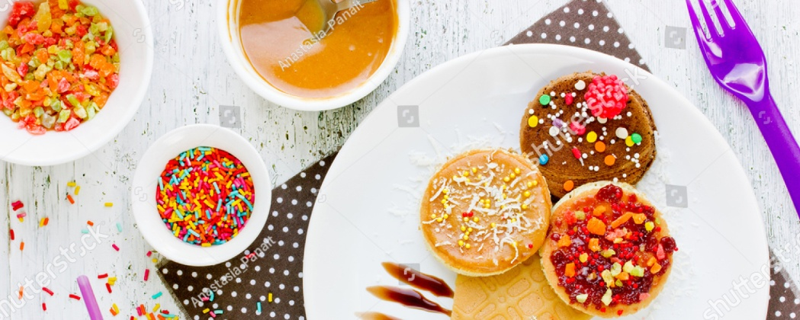

| 1 | 客人總是在詢問 這麼好吃的祕訣是什麼 |
3 |
| 4 | 6 |
| 客人總是在詢問 這麼好吃的祕訣是什麼 |
 |
今日主廚：帕金森、梅在帕
Plum in Shock曾在法國多間米其林星級廚房工作十餘年，如今於六角西餐廳 大展其精純廚藝和非凡創意。 他的家鄉法國馬賽以海鮮美食和其它特產而聞名，他從小在地中海美味佳肴的氛圍中長大。他的廚師生涯始於在法國Les Baux-de-Provence的米其林二星級餐廳Oustau de Baumanière 擔任廚房總管一職。那裡異常嚴格的管理制度，磨練了他對烹飪細節的高度專注，以及追求完美、精益求精的態度。他領悟到，唯有如此，才能創造出世界一流的頂級美膳。 自從在這間備受推崇的餐廳工作后，他又受邀於多間知名餐廳擔任要職，包括 Hotel le Kilimandjaro 的米其林二星級餐廳La Cabro d’Or, Oasis、米其林三星級餐廳 Hôtel La Pinède 等。之後他來到亞洲，先後擔任北京S.T.A.Y.法式餐廳的廚房總管和台北S.T.A.Y.餐廳的行政主廚。 Bon appétit ! |
|
交通資訊 |
男
女
 
